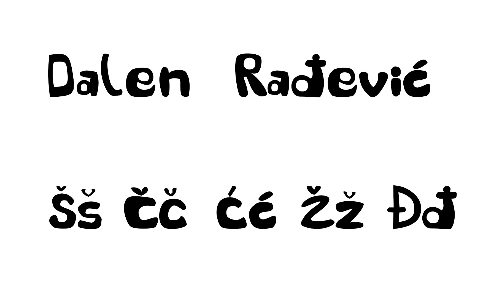
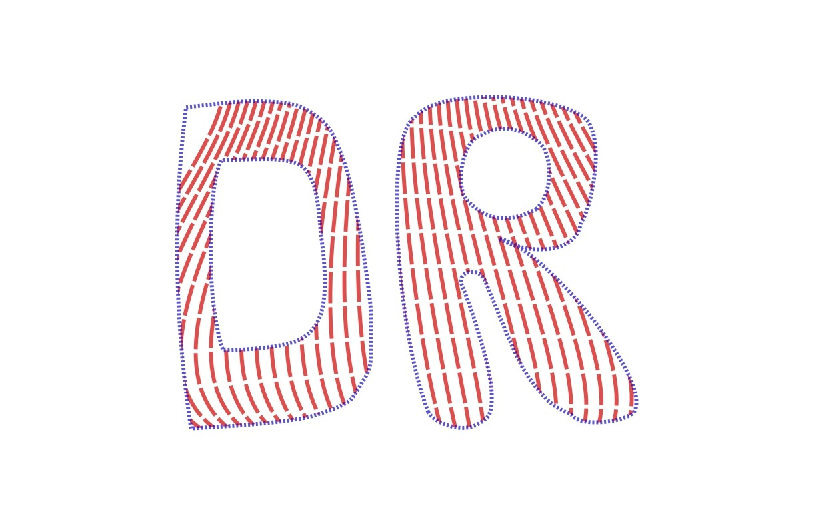
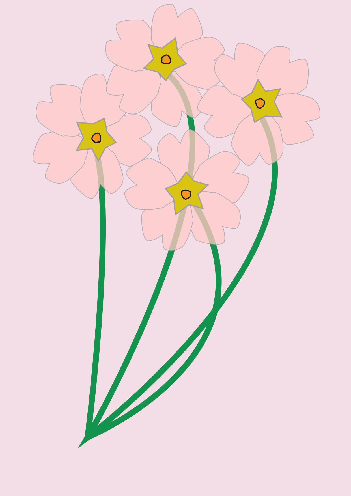
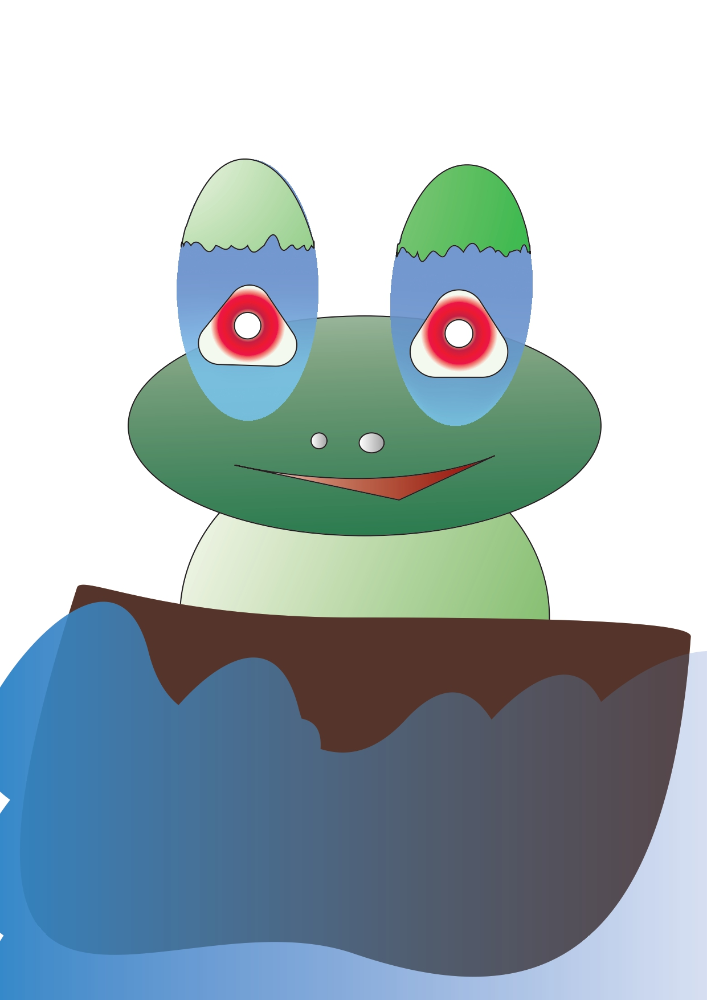
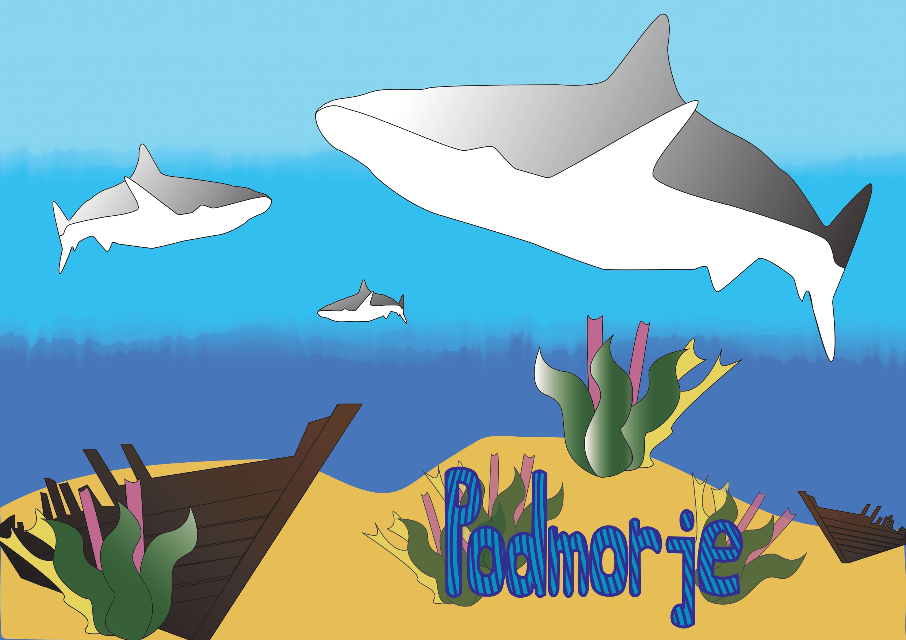
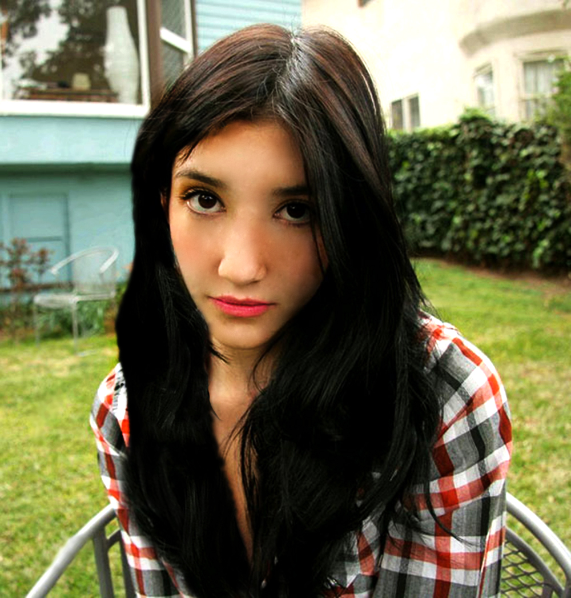
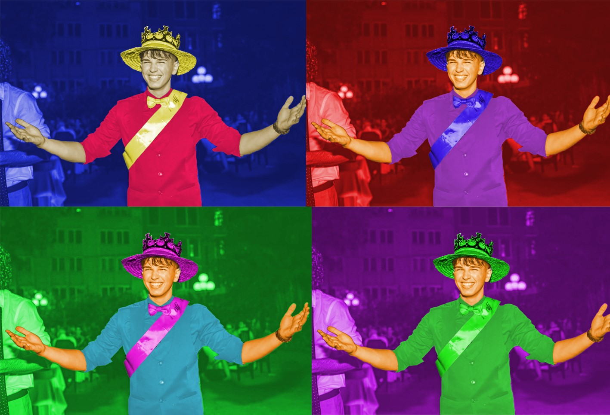
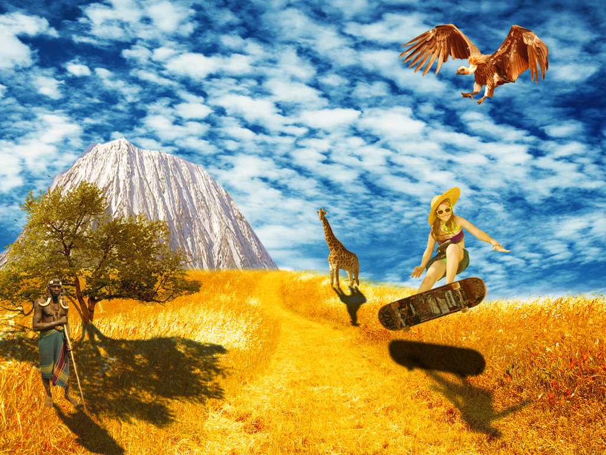
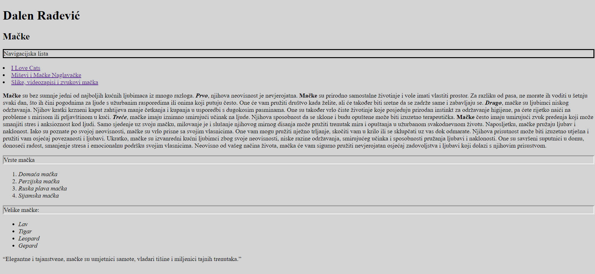

Font
Samostalna izrada vlastitog Fonta
Krivulje
Crtanje Bezierovih krivulja u koordinatnom sustavu
Sustavi Boja, Transformacije, Multipliciranje, Grupiranje
Crtanje oblika prema predlošku
Gradijenti, Transparencija
Apliciranje različitih vrsta gradijenata. Transparencija i poredak slojeva u izradi složene grafike
Projektni zadatak 1
Prvi kolokvij iz Digitalnih multimedija
Retuširanje
Tehnike digitalnog retuširanja fotografija za postizanje realističnog efekta
Koloriranje
Tehnike neinvazivnog koloriranja slike koje se može primijeniti na crno-bijele slike ili slike u boji kojima želimo promijeniti nijansu određenih područja
Fotomontaža
Glavni cilj fotomontaže je kombiniranje više fotografija izrezivanjem dijelova različitih slika i spajanjem u jednu cjelinu
Projektni zadatak 2

Drugi kolokviji iz Digitalnih multimedija
Kinemagrafija

Kinemagraf ili eng. cinemagraph je video isječak čija se sekvenca ponavlja u beskonačnost, najčešće u GIF formatu, a u kompoziciji spaja pokretnu i statičnu grafiku
Uređivanje videozapisa
Rezanje i spajanje video isječaka iz više izvora, video efekti, brisanje i dodavanje zvuka, dodavanje i obrada teksta
Web stranica
Stvaranje vlastite web stranice